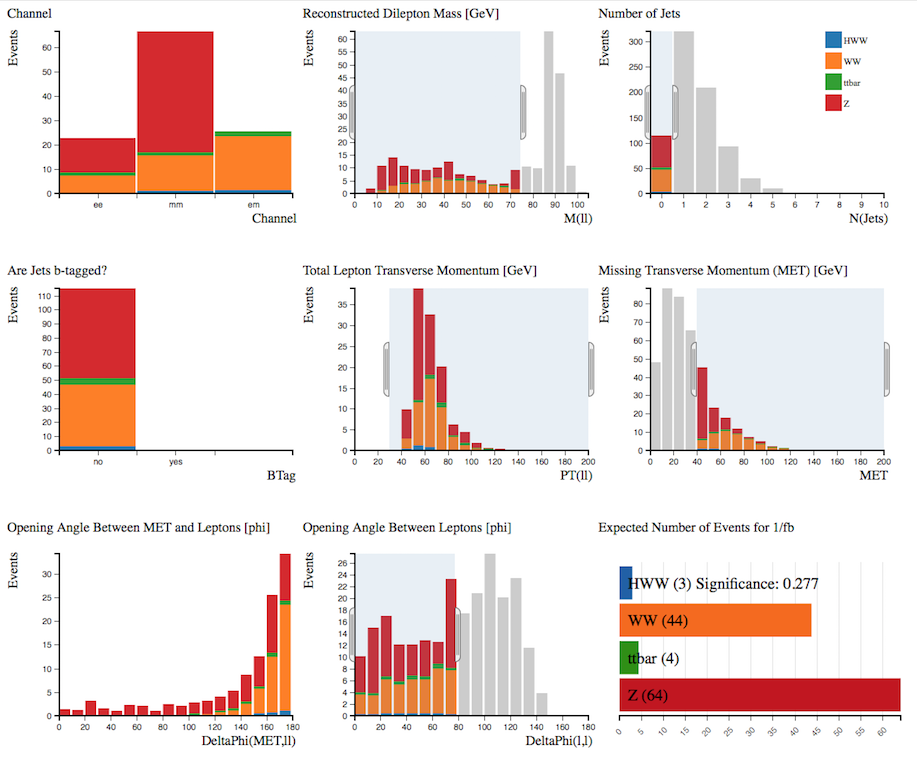

HEP Data for Everyone:
CERN open data and the ATLAS and CMS experiments
University of Notre Dame, USA
for the ATLAS and CMS Collaborations

Who?
ATLAS and CMS
- Two general-purpose experiments at the Large Hadron Collider, CERN
- Broad physics programs
- Currently taking proton-proton collision data at $\mathrm{\sqrt{s}}$ = 13 TeV
- http://cern.ch/cms
- http://atlas.cern
- If you want to find out more, ICHEP is the right place
What?
ATLAS and CMS have adopted open-access policies, both of which use common notions of levels of access to data:
- Level 1: data directly related to publications
- Level 2: simplified data formats suitable for education and outreach
- Level 3: “analysis-level” reconstructed data, simulation, and software
- Level 4: raw data and associated software
- Level 1: data directly related to publications
Level 2: simplified data formats suitable for education and outreach
Level 3: “analysis-level” reconstructed data, simulation, and software
- Level 4: raw data and associated software
Why?

Open data benefits the public,
- Education
- Public engagement
Open data benefits the public, the experiments,
- Education
- Public engagement
- Data and analysis preservation
Open data benefits the public, the experiments, and science
- Education
- Public engagement
- Data and analysis preservation
- Physicists
- Data scientists
- Citizen scientists
A bit of history...
Open data and masterclasses
The first and most enduring use of public data from the LHC is education. For example, since 200X data from the four LHC experiments has been used in the international masterclasses conducted under the auspices of the International Particle Physics Outreach Group and organized by TU Dresden and QuarkNet.
2016 International Masterclasses
- 11 February - 23 March
- ALICE, ATLAS, CMS, LHCb
- 276 masterclasses
- 13k students
- 213 institutes
- 46 countries
The success of such programs as the masterclasses was one of the favorable factors considered by the LHC experiments when further data releases and open-access policies were considerered.
How?
Challenges
"Making the data public does not make them any simpler".
In order to make it useful and useable for the public several challenges have to be overcome:
- Data volume: datasets of up to hundreds of terabytes is a lot to handle and releases will only get larger
- Data complexity: reflects the complexity of the experiments themselves
- Software environment: large, custom-made software frameworks are required to read and analyze data; not-inconsiderable software skill is needed as well
- Physics knowledge needed: in an experiment those analyzing data either have or are working towards a PhD in physics
The details of how ATLAS and CMS responded to these challenges can and do differ but in general the following common approaches were used:
- Provide access and analyses at different levels of knowledge and expertise
- Where possible and applicable provide simplified datasets
- Provide good documentation
- Make example analysis code available
- Allow for analysis and visualization via the browser: e.g. histograms, event displays
- Provide virtual machines with software environment for more advanced users
CMS
CMS data and tools
- Intended audience: all levels of the public
- There is therefore a spectrum of levels of access and complexity
- Also attempt to address issues of data cataloging, validation, and preservation
- Data and tools available via CERN Open Data Portal
CMS data and tools (the details)
- Nov 2014: half of 2010 pp collision data at $\sqrt{s} =$ 7 TeV released, 27 TB in size, equivalent to tens of $\mathrm{pb^{-1}}$
- April 2016: half of 2011 pp collision data at $\sqrt{s} =$ 7 TeV released, 100 TB in size, equivalent to ~ 2.5 $\mathrm{fb^{-1}}$, along with 200 TB of Monte Carlo samples
- "Level 3" primary datasets are released in CMS AOD (Analysis Object Data) ROOT format
- Derived (i.e. reduced) datasets in csv, JSON, and CMS PAT (Physics Analysis Tool) ROOT format
- Extensive documentation includes data validation, trigger, and detector condition information as well as analysis code examples
- Virtual machines with CMS software environments needed for AOD analysis
- Data is stored in EOS and can be downloaded directly or accessed via XRootD
CERN Open Data Portal
- Portal is divided into two main areas: “Education” and “Research”
- Datasets are distinguished as either “primary" or “derived” (roughly falling into Level 3 and Level 2 categories, respectively)
- Philosophy: include and build upon the previous and current success of public data in education and outreach but also include the possibility for more in-depth, complex analysis
- Web applications for immediate use are available: event display and histogram tool
- Built with Invenio digital library software
- All four LHC experiments use the portal to various extents; this section focuses on CMS
Education

Visualize and explore events from the datasets with an interactive event display
Education
Recently high school teachers as part of the CERN High School Teacher program successfully used CMS derived data to come up with exercises for the high-school level
Research
Research

Data are identified with persistent, citable digital object identifiers (DOI) and are released under the Creative Commons CC0 waiver, essentially releasing it into the public domain.
Research
// WHAT: Fill histograms for the following attributes from the current
// globalMuon-Track:
// - p (momentum vector magnitude)
// - pt (track transverse momentum)
// - eta (pseudorapidity of momentum vector)
// - chi-square
// - ndof (number of degrees of freedom of the fit)
// - normalizedChi2 (normalized chi-square == chi-squared divided by ndof
// OR chi-squared * 1e6 if ndof is zero)
h1->Fill(it->p());
h2->Fill(it->pt());
h3->Fill(it->eta());
h4->Fill(it->phi());
h53->Fill(it->chi2());
h54->Fill(it->ndof());
h55->Fill(it->normalizedChi2());
Research

ATLAS
ATLAS data and tools
- Initial focus: undergraduate and postgraduate students (but eventually to expand target audience)
- Within this scope, provide access at 3 levels: from visualizations, to web analysis, to more complex analysis
- Data and tools available via the ATLAS Open Data Page: released on X July, just Y days ago!
ATLAS data and tools (the details)
- 1 $\mathrm{fb^{-1}}$ of 2012 pp collision data at $\sqrt{s} =$ 8 TeV and Monte Carlo
- Datasets: Electron/gamma and muon
- ROOT TTree format
- Interactive visualization and analysis tools via browser
- ROOT + Jupyter notebooks
- python-based analysis framework code
- Virtual machines with software available
- Data and tools: ~14 GB; all can fit on a USB stick
- Data and VMs also made available via CERN Open Data Portal
ATLAS Open Data Page
Get Started
Explore correlations between variables in the datasets with histogram tool
Web Analysis
C++ and python notebooks available for various analyses: $\mathrm{W}$, $\mathrm{Z}$, $\mathrm{t\bar{t}}$, $\mathrm{WZ}$, $\mathrm{ZZ}$, $\mathrm{H \rightarrow WW}$, $\mathrm{Z^{'}}$
Data and Tools
Data and Tools


Future plans
- For CMS: to continue with regular data releases
- For ATLAS: to work towards a second release of data
- Improve the data analysis tools available to the public
- Develop accompanying educational material data
- Overall, enable as many as possible to use and enjoy the data
Acknowledgements
- ATLAS Collaboration
- CMS Collaboration
- CERN Scientific Information Services
- CERN Invenio team